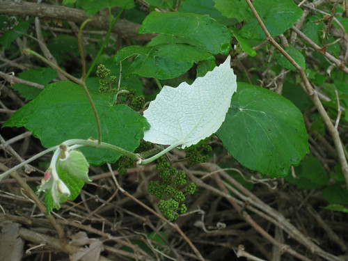
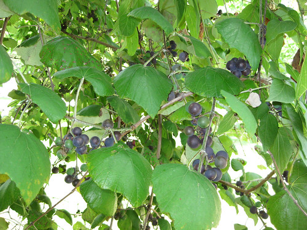
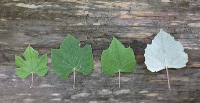
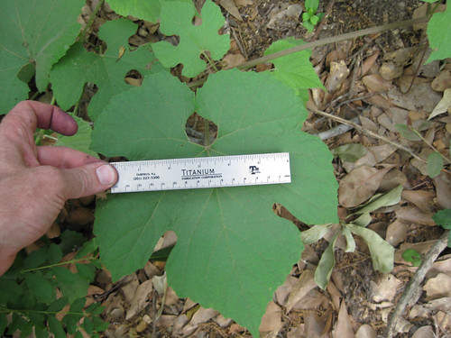

Grape - Mustang
Scientific name: Vitis mustangensis
Abundance: plentiful
What: fruits, leaves, young tendrils
How: fruit raw (very tart), cooked, dried, preserves, wine; leaves and tendrils cooked,
Where: Edges of woods. Mustang grape leaves are fuzzy and have a white underside.
When: summer
Nutritional Value: calories, antioxidants
Other uses: water can be obtained from the vines, wild yeast from the fruit
Dangers: Mustang grapes are very acidic and handling/eating large amounts of the raw fruit can cause burns to hands and mouth.
Mustang grape vine with unripe fruit. Note that the top of the leaves are green while their underside is white/gray. Both sides of the leaf are fuzzy to the touch.
Almost-ripe Mustang grapes.
Mustang grape leaves start out deeply lobed but over the summer the lobes fill in until the leaf is shaped like the traditional grape leaf.
The lobed leaves can get quite large before filling in, depending on growing conditions.
Mustang grapes are easy to tell apart by their leaves from other wild grapes. The topside are dark green and smooth while the undersides are gray and fuzzy like the nose of a horse. These grapes are the first to ripen in the summer here in Texas. Their skins are thick and tough, surrounding a very tart, gelatinous interior containing several small seeds. This acidic tartness of the mustang grape skins makes them unpleasant to eat raw and can result in acid burns on your mouth and fingers. However, this acid gives them a complex flavor when made into jam/jelly or wine. When making jelly include some skins of green/unripe grapes as a source of pectin.
Mustang grape vines can be used as an emergency water source in the woods. Cut through a thick grape vine as high up as you can reach, followed by cutting through it again at the very bottom. To collect the water which drips out support the top end up in the air and place the bottom end below it in a container. Once the water flow stops cut two feet off the top and more water will drip out of the vine. Repeat the cutting off of the top two feet every time the water stops flowing until no vine is left.
Due to their fuzziness, the leaves aren't used in cooking like other grape leaves.
Mustang grapes seem to prefer climbing along fences, old farm equipment, and other abandoned works of mankind in sunny fields.